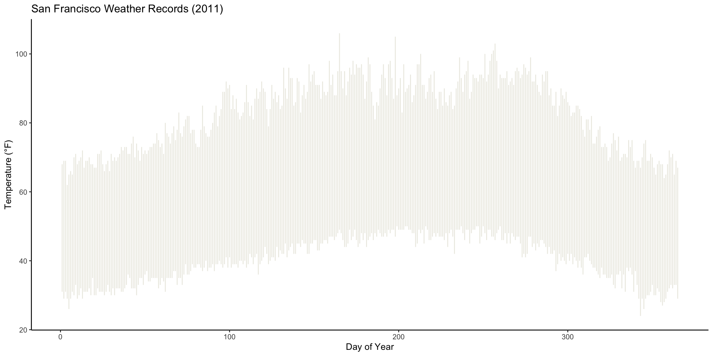
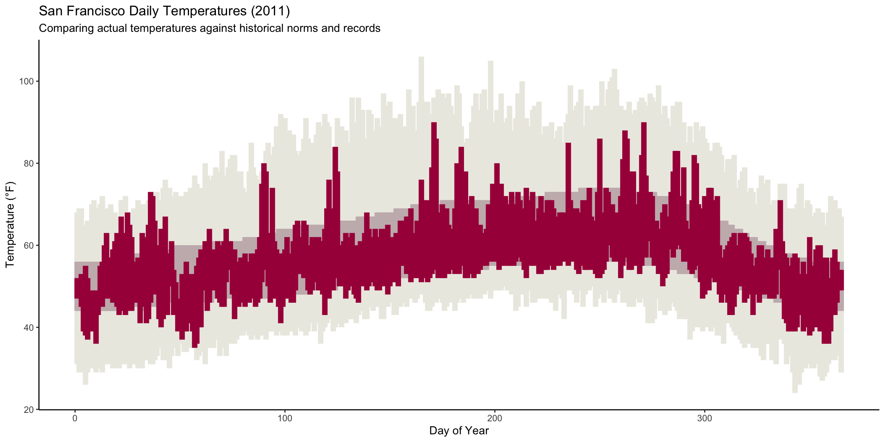
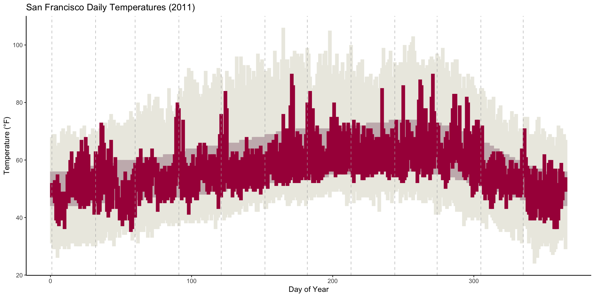
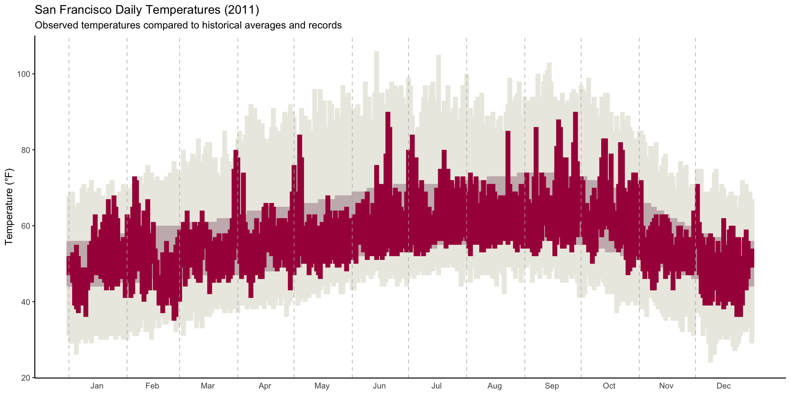
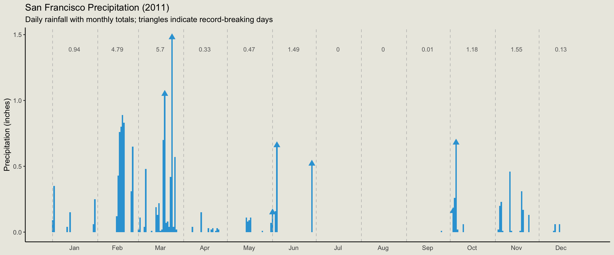

Advanced Data Visualization: Recreating the NYTimes Temperature Plot
Introduction
This assignment challenges us to recreate the New York Times 2015 Temperature Visualization using San Francisco weather data from 2011. The NYTimes visualization is a masterclass in data storytelling—it transforms abstract climate data into an immediately comprehensible narrative about our warming planet. Through this exercise, I aim to develop not only technical proficiency with ggplot2 but also a deeper appreciation for how design choices serve communicative intent.
Exercise 1: Data Storytelling Analysis
What key message does NYTimes want readers to explore?
The introduction—“Scientists declared that 2015 was Earth’s hottest year on record”—immediately establishes the narrative frame. The visualization isn’t merely presenting temperature data; it’s inviting readers to experience the claim that our planet is warming. The key message is both empirical and visceral: 2015 wasn’t just statistically warmer—it felt anomalous when placed against historical context.
How did this goal inform the visualization design?
The design choices flow directly from this communicative intent:
Layered comparison: By displaying record ranges, normal ranges, and actual temperatures simultaneously, readers can see at a glance where 2015 sits relative to historical norms. The choice to layer rather than use facets keeps all comparisons in immediate visual proximity.
Color hierarchy: The visual emphasis (through color saturation and hue) draws attention to deviations from the norm, particularly warm anomalies. This isn’t neutral data presentation—it’s visual rhetoric that supports the narrative.
Temporal continuity: The continuous x-axis preserves the cyclical, seasonal nature of temperature while allowing readers to scan for patterns across the entire year.
Aesthetic Mapping Analysis
| Variable | Aesthetic Mapping |
|---|---|
dateInYear |
x-position (horizontal placement) |
RecordLow, RecordHigh
|
y-position endpoints (record temperature band) |
NormalLow, NormalHigh
|
y-position endpoints (normal temperature band) |
Low, High
|
y-position endpoints (actual temperature band) |
| Temperature category | fill color (distinguishing record/normal/actual) |
Exercise 2: Identifying Appropriate Geoms
After reviewing the ggplot2 reference page, several geoms emerge as candidates:
-
geom_linerange: Draws vertical lines from ymin to ymax—ideal for temperature ranges at each date point -
geom_ribbon: Creates filled areas between ymin and ymax—could work but better suited for continuous shaded regions -
geom_rect: Draws rectangles with precise positioning—offers finer control over width
For this visualization, geom_linerange provides the cleanest implementation since we want discrete vertical bars for each day, not continuous ribbons. The geom_rect offers more control over bar width if needed.

Reflection: The initial plot reveals the envelope of historical temperature extremes. The light tan color (#ECEBE3) establishes this as background context—a canvas against which more salient information will be layered. This design choice follows Tufte’s principle of using visual hierarchy to guide attention.
Exercise 3: Layering Temperature Ranges
Now I add the typical temperature range and the actual 2011 temperatures. The key insight here is that ggplot2 layers are drawn in order—later geoms overlay earlier ones. This means the most important information (actual temperatures) should come last.
ggplot(weather) +
# Layer 1: Record temperature range (background)
geom_linerange(
aes(x = dateInYear, ymin = RecordLow, ymax = RecordHigh),
color = "#ECEBE3",
linewidth = 2.5
) +
# Layer 2: Normal/typical temperature range (middle ground)
geom_linerange(
aes(x = dateInYear, ymin = NormalLow, ymax = NormalHigh),
color = "#C8B8BA",
linewidth = 2.5
) +
# Layer 3: Actual 2011 temperatures (foreground)
geom_linerange(
aes(x = dateInYear, ymin = Low, ymax = High),
color = "#A90248",
linewidth = 2.5
) +
labs(
x = "Day of Year",
y = "Temperature (°F)",
title = "San Francisco Daily Temperatures (2011)",
subtitle = "Comparing actual temperatures against historical norms and records"
) +
theme_classic()
Reflection: The layered structure now tells a richer story. The pink/magenta bars showing actual temperatures sit atop the neutral bands, making it immediately visible where 2011 deviated from norms. Days where the actual temperatures extend beyond the normal range demand attention—they’re anomalies worth investigating.
Exercise 4: Adding Month Demarcations
To add vertical lines separating months, I need to identify where each month begins. This requires creating a subset of the data containing only the first day of each month.
# Create data for month dividers
month_starts <- weather |>
filter(Day == 1) |>
select(dateInYear, Month)
ggplot(weather) +
# Temperature layers
geom_linerange(
aes(x = dateInYear, ymin = RecordLow, ymax = RecordHigh),
color = "#ECEBE3",
linewidth = 2.5
) +
geom_linerange(
aes(x = dateInYear, ymin = NormalLow, ymax = NormalHigh),
color = "#C8B8BA",
linewidth = 2.5
) +
geom_linerange(
aes(x = dateInYear, ymin = Low, ymax = High),
color = "#A90248",
linewidth = 2.5
) +
# Month dividers
geom_vline(
data = month_starts,
aes(xintercept = dateInYear),
color = "gray70",
linetype = "dashed",
linewidth = 0.3
) +
labs(
x = "Day of Year",
y = "Temperature (°F)",
title = "San Francisco Daily Temperatures (2011)"
) +
theme_classic()
Reflection: The vertical lines provide crucial temporal anchoring. Without them, the continuous stream of days blurs together. With them, readers can quickly locate specific months and compare seasonal patterns. This demonstrates an important principle: good visualization often requires adding structure that isn’t inherent in the data itself.
Exercise 5: Custom X-Axis Labels
The default numeric x-axis (1-365) is technically accurate but semantically opaque. Replacing it with month names centered within each month’s span transforms raw numbers into meaningful temporal markers.
Search Process Documentation:
I searched Google for “ggplot2 custom axis labels at specific positions” which led me to scale_x_continuous() with the breaks and labels arguments. The key insight is that we need to calculate the midpoint of each month.
# Calculate month midpoints for label positioning
month_midpoints <- weather |>
group_by(Month) |>
summarize(
mid = mean(dateInYear),
.groups = "drop"
)
ggplot(weather) +
geom_linerange(
aes(x = dateInYear, ymin = RecordLow, ymax = RecordHigh),
color = "#ECEBE3",
linewidth = 2.5
) +
geom_linerange(
aes(x = dateInYear, ymin = NormalLow, ymax = NormalHigh),
color = "#C8B8BA",
linewidth = 2.5
) +
geom_linerange(
aes(x = dateInYear, ymin = Low, ymax = High),
color = "#A90248",
linewidth = 2.5
) +
geom_vline(
data = month_starts,
aes(xintercept = dateInYear),
color = "gray70",
linetype = "dashed",
linewidth = 0.3
) +
scale_x_continuous(
breaks = month_midpoints$mid,
labels = month.abb
) +
labs(
x = NULL,
y = "Temperature (°F)",
title = "San Francisco Daily Temperatures (2011)",
subtitle = "Observed temperatures compared to historical averages and records"
) +
theme_classic() +
theme(
axis.ticks.x = element_blank(),
panel.grid.major.x = element_blank()
)
Reflection: This transformation—from numbers to names—seems minor but fundamentally changes how readers interact with the visualization. “Day 180” requires mental arithmetic; “July” is immediately meaningful. Good visualization meets readers where they are.
Exercise 6: Precipitation Visualization
The precipitation plot requires different visual encodings: bars for daily precipitation, triangles for record-breaking days, and text annotations for monthly totals.
# Calculate monthly precipitation totals
monthly_precip <- weather |>
group_by(Month) |>
summarize(
total = sum(Precip, na.rm = TRUE),
mid_day = mean(dateInYear),
.groups = "drop"
)
# Maximum precipitation for positioning text
max_precip <- max(weather$Precip, na.rm = TRUE)
ggplot(weather) +
# Daily precipitation bars
geom_col(
aes(x = dateInYear, y = Precip),
fill = "#32a3d8",
width = 1
) +
# Month dividers
geom_vline(
data = month_starts,
aes(xintercept = dateInYear),
color = "gray70",
linetype = "dashed",
linewidth = 0.3
) +
# Record precipitation markers (triangles)
geom_point(
data = weather |> filter(RecordP == TRUE),
aes(x = dateInYear, y = Precip),
shape = 17, # triangle
color = "#32a3d8",
size = 3
) +
# Monthly total annotations
geom_text(
data = monthly_precip,
aes(x = mid_day, y = max_precip * 0.95, label = round(total, 2)),
size = 3,
hjust = 0.5,
vjust = 1,
color = "gray40"
) +
scale_x_continuous(
breaks = month_midpoints$mid,
labels = month.abb
) +
labs(
x = NULL,
y = "Precipitation (inches)",
title = "San Francisco Precipitation (2011)",
subtitle = "Daily rainfall with monthly totals; triangles indicate record-breaking days"
) +
theme_classic() +
theme(
axis.ticks.x = element_blank(),
panel.background = element_rect(fill = "#ebeae2", color = NA),
plot.background = element_rect(fill = "#ebeae2", color = NA)
)
Reflection: The precipitation plot uses different visual vocabulary than the temperature plot—appropriately so, since precipitation is fundamentally different data. Temperature has natural ranges (low to high each day); precipitation is a single value per day. The triangular markers for record days provide a secondary narrative layer without cluttering the primary visualization.
Concluding Reflection
This exercise illuminated several principles that extend beyond technical ggplot2 proficiency:
Design serves story: Every aesthetic choice—color, layer order, axis labels—should advance the communicative intent. The NYTimes visualization succeeds because its design choices aren’t arbitrary; they’re rhetorical.
Layering creates hierarchy: The human eye naturally perceives layered elements as having different importance levels. By placing records at the back and actuals at the front, we guide attention toward the most meaningful comparisons.
Context enables interpretation: Raw data (temperatures, precipitation amounts) becomes meaningful only when contextualized against norms, records, and temporal structure. Visualization isn’t just displaying data—it’s constructing interpretive frameworks.
Documentation is exploration: The process of searching documentation, experimenting with parameters, and iterating toward solutions is itself a form of learning. The “answer” matters less than the capacity to navigate toward it.
As someone working on institutional capacity analysis in development contexts, I’m struck by the parallel: just as good visualization requires layering context to enable interpretation, good policy analysis requires understanding the institutional scaffolding that gives interventions meaning. Data, like policy, speaks only within frameworks of interpretation.